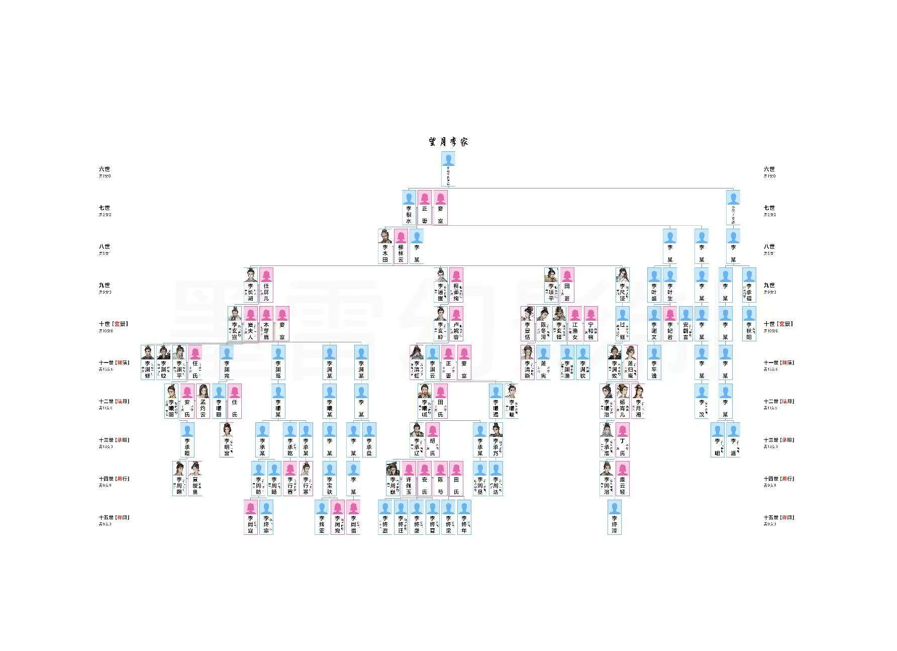
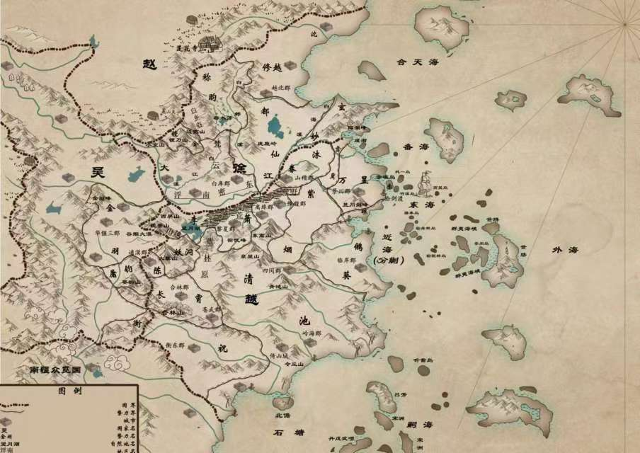

《玄鑒仙族》是季越人創作的修真類網路小說，於2022年10月7日連載於起點中文網，截至2024年12月23日，已更新352.97萬字，獲得190.51萬總推薦。
小說主要講了陸江仙熬夜猝死，殘魂卻附在了一面滿是裂痕的青灰色銅鏡上，飄落到了浩瀚無垠的修仙世界。兇險難測的大黎山，眉尺河旁小小的村落，一個小 家族拾到了這枚鏡子，於是傳仙道授仙法，開啟波瀾壯闊的新時代。
家庭
2024年1月10日，閱文集團發布2023“十二天王”榜單，00後網文作家季越人憑藉小說《玄鑒仙族》上榜，獲評2023古典仙俠“精品王”。《玄鑒仙族》在讀者中反響很大，是對近年來網路文學幽默鬆弛風格主潮的一次跳離，對傳統修仙文風格、對宏大敘事的一個回歸。該小說是“群像文”的探索實踐，人物塑造很見功力，同時具備“語言自覺”，呈現了古典文學式的簡練、傳神的語言特點，更以幻想世界表達了對現代社會的理解和觀照，並且它注重吸收傳統文化中瑰麗的藝術想像，故事情節雄奇詭譎、跌宕起伏，充溢著濃郁的中華文化元素和福建地域特色，充分體現了作者對優秀傳統文化傳承的自覺意識。
基本介紹
- 中文名：玄鑒仙族
- 作者：季越人
- 作品類型：修真
- 連載平台：起點中文網
- 連載狀態：連載中
- 主要角色：陸江仙，李通崖，李淵蛟，李曦明，李周巍
- 是否出版：否
- 最新章節：第九百八十五章 重火
作品簡介,創作背景,角色介紹,陸江仙,七世,八世,九世,十世（玄景）,十一世（淵清）,十二世（曦月）,十三世（承明）,十四世（周行）,十五世（絳闕）,十六世（遂語）,小宗及支脈,李家其他,望姓 田家,望姓 陳家,望姓 任家,望姓 涇陽柳家,望姓 黎涇柳家,望姓 徐家,望姓 安家,望姓 許家,望姓 竇家,勢力,萬家,汲家,盧家,丁家,烏家,韓家,費家,郁家,袁家,莊家,鄧家,於家,鄰谷家,江北王家,崔家,豫陽陳家,沈家,倪家,蕭家,檀山李家,相李家,景渤高（是樓）家,司馬家,拓跋家,潁華王家,楊家,周朝,魏國,寧國,齊國,梁國,趙國,燕國,吳國,象雄國/勝白殿,鐵弗國,西婆國,朱羅國,浮雲洞,密雲洞,梵雲洞,槐魂殿,戊竹門,鴻雪門,雪冀門,陵峪門,沐券門,鏜金門,巫山,聽雷島,屠鈞門,稱昀門（兜玄）,白鄴都仙道（兜玄）,玄妙觀（通玄）,曲巳山,靜怡山,長流山,拜陽山,全景門,赤礁島（兜玄）,玄岳門（通玄）,長霄門（兜玄）,大鵂葵觀（青玄）,純一道（青玄）,南順羅闍,大黎山妖洞,南火天府（兜玄）,雷雲寺/策雷泊雲法道（兜玄）,東離宗,堰羊寺宮（兜玄）,通玄宮（通玄）,宛陵宗（兜玄）,萬昱劍門（青玄）,紫煙門（青玄）,衡祝道（青玄）,九邱山（青玄）,太室山,合真道（青玄）,北溟殿,北寰宗,長懷山（青玄）,修越宗（青玄）,金羽宗（通玄）,青池宗（青玄）,北宮玄雷法道（兜玄）,觀榭（通玄）,蓬萊,螭屬,青松觀（青玄）,月華元府（青玄）,落霞山（通玄）,陰司（兜玄）,北釋,其他,修煉體系,仙修,仙基,釋修,作者簡介,作品評價,章節目錄,溪里青玄,長鯨月落,行蛟見虹,散庚浮白,天色既明,
作品簡介
陸江仙熬夜猝死，殘魂卻附在了一面滿是裂痕的青灰色銅鏡上，飄落到了浩瀚無垠的修仙世界。兇險難測的大黎山，眉尺河旁小小的村落，一個小家族拾到了這枚鏡子，於是傳仙道授仙法，開啟波瀾壯闊的新時代。(家族修仙，不聖母，種田，無系統，群像文)
創作背景
《玄鑒仙族》是季越人的首部網文作品，提筆寫《玄鑒仙族》最早是出於練筆的動機。剛好那段時間他在讀《白鹿原》和《冰與火之歌》，前一本是家族題材，後一本是典型的群像小說，並且有許多超自然元素加持。《玄鑒仙族》結合了兩者的特點，以修仙為題材，季越人構建了大戰之後相對沉寂壓抑的小說氛圍，形成獨特的世界景觀和敘述格調。由於是首部長篇作品，季越人選擇了網文連載的方式，既可以便捷地發布，也可以“檢測”寫作水準。
角色演員介紹
本書描述了黎涇李 家的修仙史，故事現已進入家族第九代（第十六世）。
陸江仙
身份：月華元府府主
境界：不明，疑似道胎之上
道號：盈昃
仙器：日月兩儀玄鑒
金性果位：疑似曾持有全部太陰太陽
當前狀態：器靈
簡介：穿越者，曾穿越到此方世界之初，疑似看遍了人族發展，曾與少陽魔君論道，後將之擒殺，一分為三。也與道胎巔峰的真螭論道，告訴其須化為龍，致使真螭吞羽蛇，駕馭不住兩道果位而死，引發淥解合水一事。此時其身處於青松觀中，後開創月華元府，又疑似與昭元仙府開創者魏太祖李乾元有關，給予其明陽果位，在傳到末代傳人李江群時，據書中真君猜測為嘗試突破太陰太陽 ，走出新的一條路而身隕，不知為何元神進入玄鑒之中，後釋修南下，李乾元被圍攻而死，昭元仙府破滅，李乾元轉世身被落霞山所捉，月華元府亦是破滅，在李江群被圍攻而死後，又時隔多年，自太虛之中落下，被李家老祖李木田所得，並且失去了穿越後的所有記憶，故事開始。

七世
李根水：子李木田，被元家毒死。
八世
李木田：父李根水，妻柳林雲，為人多慮善斷、兇狠冷厲，為父親、胞弟報仇屠滅村中大戶元家，分立李家嫡庶，購置田產，壽盡。
九世
李長湖：父李木田，母柳林雲，妻任屏兒，子李玄宣。溫順恭謙如良鹿，被元家餘孽刺殺。
李通崖：築基前期【浩瀚海】，父李木田，母柳林雲，妻柳柔絢，沉靜謹慎似蛟蛇，白籙重海長鯨。在江南紫府暗算九世摩訶的棋局裡淪為棄子，至死沒有選擇血氣獻祭療傷，劍斬郁蕭貴後仙基崩碎而亡。
李項平：靈初輪，父李木田，母柳林雲，妻田芸，籙氣避死延生，奸毒狠厲如餓狼，被山越築基籙巫咒殺。
李尺涇：築基前期【湖秋月】，父李木田，母柳林雲，司元白七弟子，聰慧俊秀是白狐，劍仙，被參淥馥煉成人丹。
十世（玄景）
李玄宣（伯）：練氣九層，父李長湖，母任屏兒，妻竇氏，妾木芽鹿，謹言慎行，兢兢業業，勤儉持 家。
李玄鋒（叔）：築基巔峰【鏤金石·天金胄】，父李項平，母田芸，妻寧和棉，外室江漁女，籙氣力貫千均。被青池徵調南疆，凶威赫赫，成為眾紫府棋子，抱必死之心解決了李家眾多隱患敵人並抗下了因果，後服用人丹，第一次南北大戰後坐化。
李玄嶺（仲）：練氣三層，父李通崖，母柳柔絢，妻盧婉容，心思縝密，思慮周全，穩重果敢，被法慧打死於邊燕山鎮虺觀。
李景恬（叔）：父李項平，母田芸，夫陳冬河，女李清曉，編撰族史，壽盡。
十一世（淵清）
李淵修（伯）：承明輪，父李玄宣，母竇氏，大方溫和，淵思寂慮、姿態不俗，被郁家江客卿炸死。
李淵蛟（季）：築基中期【涇龍王】，父李玄宣，母木芽鹿，妻蕭歸鸞，子李曦治，女李月湘，籙氣行氣吞靈，謹慎多疑、善謀能斷、殺性較重，長相狡詐兇惡不似好人，被唐攝都殺於蜃鏡洞天。
李清虹（仲）：紫府靈修【霄雷】，父李玄嶺，母盧婉容，，籙氣長空危雀，性格明媚張揚、委婉柔和，無情愛之心，龍君吞雷後化身龍屬之雷。
李淵雲（仲）：父李玄嶺，母盧婉容，冠雲峰坊市之亂死於裘籍。
李淵平（伯）：玉京輪，父李玄宣，母竇氏，妻任氏，子李曦明，因早產導致血氣虛弱，先天不足。為人聰慧機敏懂人心，掌權期間，勤儉持家，民豐物阜，身體原因壽儘早死。
李清曉（叔）：練氣後期，父陳冬河，母李景恬，夫蕭憲，子蕭暮雲。
李淵欽（叔）：築基中期【天金胄】，父李玄鋒，母寧和棉。
李淵完（伯）：凡人，父李玄宣，子李曦晅，已死。
李淵篤（伯）：凡人，父李玄宣，已死。
十二世（曦月）
李曦峸（仲）：練氣九層，父李淵雲，妻田家人，與李長湖相似，寬厚仁愛，可惜天賦不高，突破築基失敗身死。
李曦治（季）：築基巔峰【長霞霧】，籙氣彩徹雲衢，父李淵蛟，母蕭歸鸞，妻楊宵兒，子李承淮，妹李月湘，袁湍大弟子。
李曦明（伯）（昭景真人）：紫府前期【明陽】，籙氣谷風引火，父李淵平，母任氏，師蕭元思，妻安家人，丹師。持有紅雉沖離焰（離）、·三候戊玄火（真）、·天烏並火（並）三種紫府靈火。
深入瞭解
李曦峻（仲）：築基巔峰【松上雪】，籙氣明霜松嶺，父李淵雲，搶明方天石後身死魂未死，被屠鈞/濮羽秘密救活。
李月湘（季）：練氣五層，父李淵蛟，母蕭歸鸞，兄李曦治，死於第一次南北大戰。
李曦晅（伯）：凡人，父李淵完，妻任 家人。
李曦遏（仲）：凡人，父李淵雲，子李承㞧，已死。
十三世（承明）
李承遼（仲）：練氣九層，父李曦峸，妻胡氏，子李周巍，突破築基失敗身死。
李承㞧（仲）：築基前期【玄雷泊】，父李曦遏，死於司徒末。
李明宮（伯）：築基後期【雉離行】，父李曦晅，母任家人。
李承淮（季）：築基【勿查我】，父李曦治，母楊宵兒，妻丁氏，子李周洛。
李承晊（伯）：凡人，父李曦明，子李周瞑，壽盡。
李承㫓（伯）：練氣四層，女李行賽，被釋修變成毒物後被李承盤降伏。
李承宰（伯）：凡人，父李曦晅。
李承暏（伯）：父李曦晅，子李周宦，已死。
李承盤（伯）：憐愍，大欲道，師雀鯉魚。
李行寒父（伯）：青元輪。
十四世（周行）
李周昉（伯）：練氣七層，子李絳宗，女李闕宜，與周暘/周墾是親兄弟。
李周暘（伯）：練氣，與周昉/周墾是親兄弟，死於郭紅漸。
李周巍（仲）（明煌真人）：紫府前期【明陽】，籙氣明璋日月，父李承遼，母胡氏。出生前陸江仙用金性加持，十三歲練氣，天生金瞳自帶霸氣，公認的白麟，樞陽命數。
李周洛（季）：築基前期【金獸羽】，父李承淮，母丁氏，妻龐雲輕，子李絳淳。
李周瞑（伯）：築基前期【謁天門】，父李承晊，妻夏綬魚。
李周墾（仲）：練氣前期，由伯脈過繼到仲脈與周昉/周暘是親兄弟，死於浮南。
李行寒（伯）：築基前期【道合真】，夫莊平野。
李周達（仲）：築基中期【玄雷泊】，性格火爆，戰鬥時經常衝鋒在前，繼承李承㞧遺產後築基。
李行賽（仲）：靈初輪，父李承㫓，死於浮南。
李周遜（仲）：練氣，李承㞧遺產候選人之一。
李周退（仲）：練氣，李承㞧遺產候選人之一。
李周宦（伯）：父李承暏，子李絳唔。
十五世（絳闕）
李絳邀（仲）：李周巍長子，母許佩玉，白麟命數，受金性影響似妖怪，被關在山上不得見人。
李絳遷（仲）：築基巔峰【大離書】，李周巍次子，母安家人，性格狠毒但重視家族，白蟬命數。
李絳壟（仲）：築基中期【謁天門】，李周巍三子，母陳芍，子李遂還。
李絳夏（仲）：築基前期【謁天門】，李周巍四子，母安 家人。
李絳梁（仲）：築基前期【大離書】，李周巍五子，妻楊闐幽，師崔訣吟。
李絳年（仲）：築基前期【玉庭將】，李周巍六子，長相不佳，外放群夷海峽。
李闕宛（伯）：築基巔峰【侯神殊】，天目靈竅，父李寶馱。
李絳淳（季）：練氣五層，父李周洛，母龐雲輕。
深入瞭解
李絳宗（伯）：練氣八層，父李周昉。
李絳唔（伯）：修小室山道統，父李周宦，子李遂寧，死於荒野動亂。
李闕宜（伯）：築基，父李周昉，夫司勛會，師靈岩子。
李闕惜（伯）：練氣一層，師千璃子。
十六世（遂語）
李遂寧（伯）：練氣，天素加持（偽）。
李遂寬（伯）
李遂還（仲）：練氣，父李絳壟。
小宗及支脈
李汶：築基前期【庭中衛】。
李岨：練氣後期，死於第一次南北大戰。
李䢑：練氣中期，死於第一次南北大戰。
李秋陽：練氣，父李承福。
李承福：子李秋陽，舅李木田，壽盡。
李葉盛：弟李葉生，被李項平所殺。
李葉生：兄李葉盛，子李謝文，女李妃若，李項平死後自盡。
李謝文：父李葉生，妹李妃若，子李平逸。
李妃若：父李葉生，兄李謝文。先為木焦蠻妃子，後嫁給安鷓言。
李平逸：父李謝文，李淵修死後以死謝罪。
李東堤：誣陷李殊亞。
李岸碩：練氣，妻陳家人，子李葷，李絳壟手下。
李葷：父李岸碩，死於西案血書事件。
李寶馱：女李闕宛，子李殊亞。
李殊亞：父李寶馱，妹李闕宛。
李家其他
李烏梢：築基巔峰【朝寒雨】。
丁威鋥：築基巔峰【殿陽虎】，妻姓馬。
燕虎：築基後期【颶鬼陰】。
李七云：築基中期。
妙水：築基中期【歸流處】。
曲不識：築基中期【藏納宮】。
白猿：築基中期【抱石眠】，慶空寺→屠鈞門→於家→李家，被李玄宣所救，負責管理靈藥。
孫柏：築基中期【瀟重林】。
司徒庫：築基中期【金獸羽】。
夏綬魚：築基前期【白樆心】，夫李周瞑。
溫遺：築基前期【梭摩嶺】，弟溫山，死於隋觀。
溫山：築基前期【梭摩嶺】，兄溫遺，死於隋觀。
狄黎由解：築基前期，第二任北山越王。
高戲江（江壺子）：築基，高家人，壽盡。
陳冬河：練氣九層，陳二牛四子，妻李景恬，女李清曉。
蕭歸鸞：練氣九層，夫李淵蛟，子李曦治，女李月湘，兄蕭歸圖，突破築基失敗身死。
唦摩里：練氣後期，父木焦蠻，子李寄蠻，第三任東山越之主，死於第一次南北大戰。
李寄蠻：練氣六層，父唦摩里，母李 家旁系，第四任東山越之主。
宗彥：練氣七層。
狄黎光：練氣六層。
竇氏：練氣三層，夫李玄宣。
李七郎：練氣三層。
富解：練氣前期，玄岳門→李家，因挑撥離間被孔孤皙劈死。
胡氏：練氣，夫李承遼，子李周巍。
賀九門：練氣，義父賀町，煉器師。
胡經業：練氣。
池眺宗：練氣，李行寒舅舅。
杜斗：練氣，曾擔任北山越囅關守將。
阿會刺：靈初輪。
盧婉容：靈初輪，夫李玄嶺，突破練氣失敗後壽盡。
深入瞭解
柳柔絢：青元輪，夫李通崖，出身涇陽柳家，已死。
萬天仇：周行輪，原名萬天景，萬家覆滅後投李，死於青池屠黎夏郡。
芮瓊措：周行輪，原望月湖東岸芮家家主。
任氏：周行輪，夫李淵平，子李曦明。
田芸：父田守水，弟田有道，夫李項平，李項平死後鬱鬱而終。
任屏兒：父任平安，夫李長湖，子李玄宣。
柳林云：夫李木田，兄柳林峰，出身黎涇柳家。
木芽鹿：子李淵蛟，兄木焦蠻，李玄宣七夫人，壽盡。
許佩玉：夫李周巍，子李絳邀，死於李絳邀。
陳芍：父陳睦峰，母陳睦峰妾室，兄陳鴦，夫李周巍，子李絳壟。
丁予箐：父丁威鋥。
万旗：李絳夏心腹。
賀鈞
蒲心琊
望姓 田家
田守水：子田有道，女田芸，李木田從軍歸來帶回的兩個兄弟之一，壽盡。
田芸：父田守水，弟田有道，夫李項平，李項平死後鬱鬱而終。
田仲青：練氣九層，姑奶田芸，突破築基失敗身死。
田有道：練氣一層，父田守水，姐田芸，子田榮，死於裘籍。
田陵：練氣，父田榮。
田榮：父田有道，子田陵，被婢女刺死。
望姓 陳家
陳二牛：出身梨川口，壽盡。
家庭
陳鴦：築基中期【涇龍王】，父陳睦峰，母李曦峸庶妹，妹陳芍，子陳噤犀。
陳噤犀：築基前期，父陳鴦。
陳冬河：練氣九層，陳二牛四子，妻李景恬，女李清曉。
陳睦峰：練氣後期，師李秋陽，原配李秋陽六女，原配死後娶了李曦峸庶妹，死於第一次南北大戰。
陳噤豹：已死。
陳噤光
陳三水：陳二牛長子，被伽尼奚所殺。
陳求水：陳二牛次子。
陳芍：父陳睦峰，母陳睦峰妾室，兄陳鴦，夫李周巍，子李絳壟。
望姓 任 家
任平安：女任屏兒，李木田從軍歸來帶回的兩個兄弟之一，駐守涇陽村，病死。
任屏兒：父任平安，夫李長湖，子李玄宣。
任氏：周行輪，夫李淵平，子李曦明。
任霆：外甥女李明宮。
望姓 涇陽柳家
柳柔絢：青元輪，夫李通崖，已死。
柳眙：練氣，死於許霄。
柳凌真：周行輪，死於李烏梢。
望姓 黎涇柳家
柳林云：夫李木田，兄柳林峰。
柳林峰：妹柳林雲，壽盡。
柳苗土：街溜子，因私自上山被柳林峰清理門戶。
望姓 徐家
徐三：壽盡，子徐老爺子。
徐公明：練氣七層，死於第一次南北大戰。
望姓 安家
安鷓言：練氣九層，妻李妃若，壽盡。
安思危：築基中期【庭中衛】，父安鷓言，母李妃若，弟安思明，妻李家人。
安玄統：築基前期【青玉崖】，弟安玄心。
安玄心：築基前期，兄安玄統，死於雀鯉魚。
安思明：練氣後期，父安鷓言，母李妃若，兄安思危，妻李家人，死於第一次南北大戰。
安景明：練氣八層，在郁蕭貴面前自盡。
安鷓宇：玉京輪，安鷓言庶弟，郁家傀儡，被安鷓言凌遲後被李通崖打死。
望姓 許家
許文山：難民頭子。
許霄：練氣三層，為李烏梢所殺。
許舒目：胎息。
許佩玉：夫李周巍，子李絳邀，死於李絳邀。
望姓 竇家
竇氏：練氣三層，夫李玄宣。
家庭
竇邑：姑姑竇氏。
勢力

萬家
萬華芊：築基，疑似被遲尉/李恩成害死。
萬蕭華：靈初輪，子萬元凱，死於汲家。
萬元凱：青元輪，父萬蕭華，死於汲家。
萬天倉：玄景輪，死於汲家。
萬天仇：周行輪，原名萬天景，萬家覆滅後投李，死於青池屠黎夏郡。
汲家
汲登齊：練氣中期，妹汲登玉，已死。
汲登玉：司徒翌侍女，兄汲登齊，子司徒末，汲家被滅後絕望自盡。
盧家
盧思嗣：練氣七層，壽盡。
盧遠平：練氣，被司徒翌虐殺。
盧遠陸：練氣，死於李通崖。
盧婉容：靈初輪，夫李玄嶺，突破練氣失敗後壽盡。
盧安宇
丁家
丁西定：練氣九層。
烏家
烏少云：築基前期。
韓家
韓適楨：築基後期，於群夷海峽被東方長穆所殺。
韓適海：築基前期，兄韓適楨，已死。
韓禮：築基。
費 家
費望白：築基前期【間道錦】，子費逸和，被司元禮斬殺。
費清翊：築基前期【松上雪】，投魔被李家清理門戶。
費清伊：築基前期【禰水寒】，父費桐玉，師郁慕仙，夫秦險，子秦斂服。
費逸和：練氣九層，父費望白，被徵調去倚山城。
費桐嘯：練氣九層，父費逸和，暗戀李清虹，突破築基失敗身死。
費桐玉：練氣九層，父費逸和，女費清伊，突破築基失敗身死。
費望江：練氣六層。
費桐財：練氣五層。
費桐廬：靈初輪。
費天玄：撿到天攏雲南大陣，建立寒雲費家，已死。
家庭
郁家
郁玉封：築基後期【玉庭將】，被南山翁/陳濤驚/蕭初籌/李通崖圍殺。
郁蕭貴：築基前期，死於李通崖。
郁蕭甌：練氣九層，郁蕭貴大哥，被蔣合乾所殺。
郁慕高：練氣後期，郁蕭貴長子，被蔣合乾聯合郁家人害死。
郁慕元：練氣中期，郁蕭貴次子，為避免暴露身份自殺。
郁慕劍：法師，空無道，郁蕭貴三子，被五目度化，後死於李曦明/李曦峻。